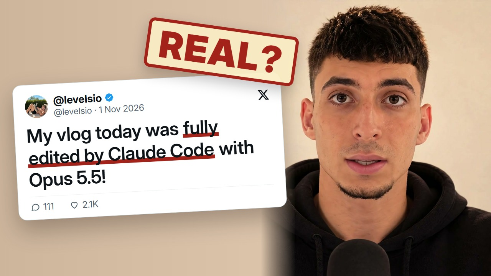

Let Claude cut your first draft: the 3-step setup
Claude Code can pick the best moments from your footage and cut a first draft. You still make it good. This is the setup I would copy tonight.
What you need
- Claude Code (it needs a paid Claude plan).
- Your clips in one folder.
- A transcript with a time on every word. Whisper makes one, and many editors export captions.
- ffmpeg, the free tool that does the cutting. Check with
ffmpeg -version.
The 3 steps
Put it all in one folder
Clips and transcript together. Open Claude Code inside that folder.Ask for the 10 best moments, then the cut
Claude reads the transcript, lists moments with timestamps, writes a cut list and cuts it with ffmpeg. Paste the starter prompt below and read the plan before it cuts anything.Spend about 20 minutes making it yours
Fix the pacing, the joke and the hook. Claude does the boring part. Taste is still yours. Tell it what's wrong in one sentence and let it change only that.
Starter prompt
You are my video editor. This folder has my clips and a transcript with word-level timestamps ([transcript file]). 1. Read the whole transcript. 2. Find the 10 best moments for a [length, e.g. 60-second] [format, e.g. vertical Short] about [topic]. For each one give the start and end time, the exact words, and one line on why it works. 3. Put them in the order that tells the strongest story, with a hook in the first [3] seconds. 4. Write a cut list (clip, start, end) and cut it with ffmpeg into [output file]. Tell me if any line in the transcript looks wrong, like words on a silent part. Cut long pauses and mistakes. Don't add music or text. Show me the plan and the cut list before you cut anything.
Swap: [transcript file], [length], [format], [topic], [3] seconds, [output file]. I haven't run this exact wording as-is, so treat it as a starting point.
The kind of cut list Claude wrote for my own vlog test (shortened):
clip 1: 0.0 to 12.1 s strongest opener, calm, eye contact clip 2: 13.1 to 26.3 s a different take, a natural jump cut clip 3: 0.45 to 16.15 s big energy, cut before a 2 s pause
Claude can cut the draft. Learn what to keep.
Claude can pick moments and cut them. It can't tell you which cut makes people stay, and that was my 20 minutes on the Short. I learn that by taking my own reels apart, and every one is inside my community. Claude Code also runs my content every day, from the morning idea list to the edit, the posting and the DMs. Under a minute:
Under a minute, sound on. The presenter is my AI clone, made with the methods taught inside.
Join AI Virality Creators →Today it's $9/month. Only a few spots left, then it goes up to $27/month.
What you get inside
Every reel I post, taken apart
The prompts, the edit choices and what each shot cost in credits. You see why a cut works before you copy it.
Go Viral
8 short lessons and cheat sheets for the Reel or TikTok people watch to the end.
Master Claude Code
The same Claude Code you just used: real builds with every file included. You say what you want and approve each step.
START HERE, for complete beginners
From zero to your first consistent AI character, lesson by lesson. Plus 30+ courses on today's tools.
A reply on your own edit
Post your cut in the community. I read it and reply myself, and other members add their notes.
From skill to client work
Modules on finding your first clients, pricing what you make and delivering it like a pro.
Your first week
- Day 1. Join, introduce yourself and say what you want to make. I point you to the module that fits.
- Days 2–4. Here for Claude Code? Start Master Claude Code. New to AI video? Start with START HERE, one short lesson a night.
- Days 5–6. Open a reel breakdown and see how the cuts are chosen. Copy that structure for your own footage.
- Day 7. Post your first cut in the community and get feedback on it.
Stop re-cutting. Start posting.
AI Virality Creators is my Skool community. Everything above is in one place, in order, and I answer you myself.
- Every reel taken apart, with prompts, edit choices and credit costs.
- Go Viral: 8 short lessons and cheat sheets for Reels and TikTok.
- Master Claude Code: real builds with every file included.
- Personal feedback on what you post, next to 125+ creators building the same skills.
Today it's $9/month. Only a few spots left, then it goes up to $27/month.
Before you join
I'm a complete beginner. Is this too advanced?
Not at all. START HERE assumes zero experience and goes in order: your first image, your first video, then a character that looks the same in every shot. If you can type a sentence, you can follow it.
I can't code. Do I need to?
You don't need to. For the Claude Code lessons you describe what you want in plain English, Claude writes the code, and you approve each step. Every lesson shows the exact clicks.
Do I need a Skool account? Can I use it on my phone?
Skool is the app the community lives in. Signing up is free and takes about a minute when you join, and it works in the Skool phone app or any browser. Watching lessons and posting work fine on a phone; Claude Code itself runs on a computer.
I don't have much time.
The lessons are short and numbered, so you always know which one is next. One lesson an evening keeps you moving, and the community keeps you posting.
Can't I learn all of this free on YouTube?
You can start there, and free guides like this one are made for exactly that. What you won't find for free: the right order, my real project files, the credit cost of every shot, and someone who looks at your video and tells you what to fix.
AI tools change every month. Won't it be outdated?
New tools get their own modules: Kling 3.0, Veo 3.1 and Nano Banana Pro are already in. The breakdowns teach how a reel is built, and that carries over to whatever tool comes next.
AI credits get expensive. What will I spend?
Every breakdown shows what each shot cost, so you know before you start. A lot of what I teach costs 0 credits, like the guide you're reading now.
Will I get lost in a big group?
It's around 125 people, small enough that new posts get answered. I reply myself, and members comment on each other's work.
Is the person in the video real?
The presenter is my AI clone, built with the same methods taught inside. I say so every time. The community is run by me, and I answer you myself.
Will this make me money?
I can't promise income. You get the skill, finished videos to show, and modules on finding clients and pricing your work. What you earn with them is up to you.
Is it only about video?
Video is the core. Master Claude Code is the second part: real builds with every file included. Prompting, voices and client work are in there too.
What if it's not for me?
Cancel anytime in your Skool settings. You also have the guarantee: publish your first AI video within 30 days of joining, and if you can't, message me for a refund. The full terms are on the About page.
Today it's $9/month. Only a few spots left, then it goes up to $27/month.
3 mistakes to skip (from my own tests)
- Footage with no variety. My vlog test turned 4 minutes of raw footage into a 59-second vlog in about 15 minutes, with zero human input. It was the same chair in front of the same wall. Claude can't invent variety you didn't shoot, so film a few places and angles.
- Trusting the transcript. Whisper "heard" "peace out" on a clip where nothing was said. Read the transcript first, and ask Claude to flag lines that sit on silence.
- Expecting a finished Short. I turned my 14-minute episode into a 55-second Short in about 6 minutes. The pauses were a bit long, the text was generic and half the frame was empty. It needed about 20 minutes of a human.